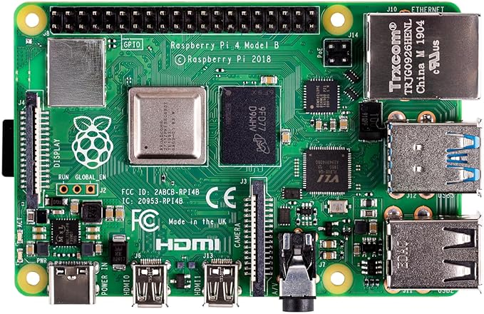
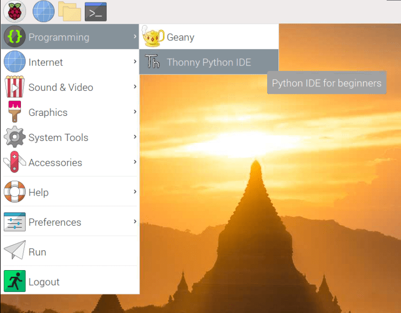
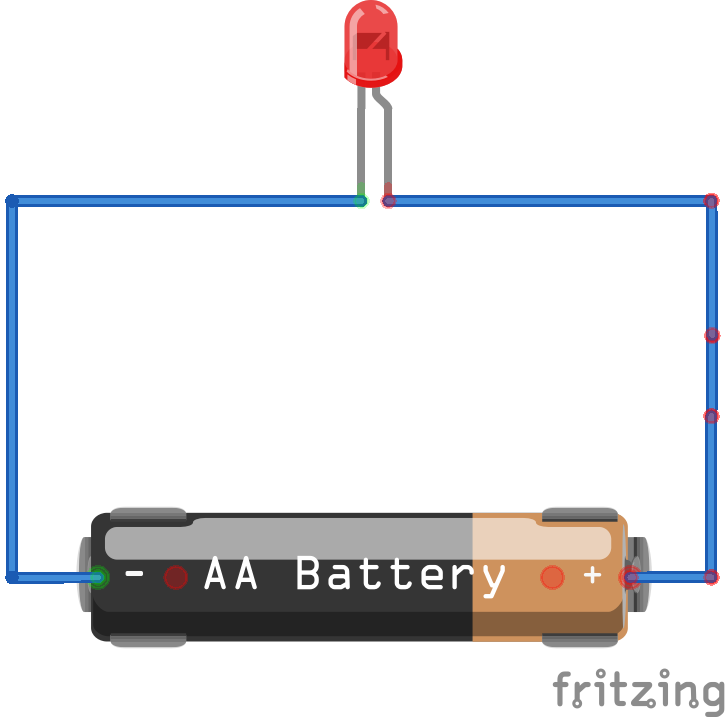
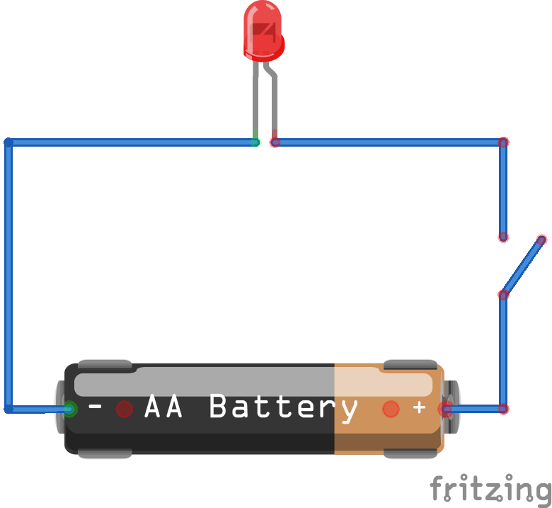
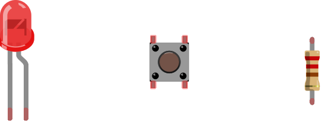
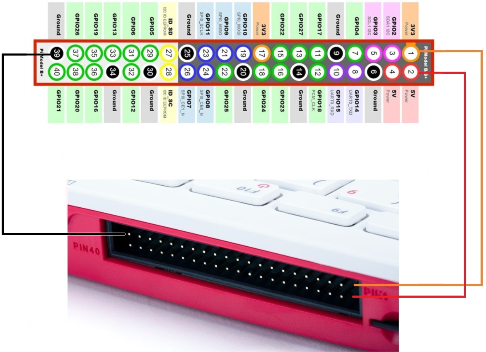
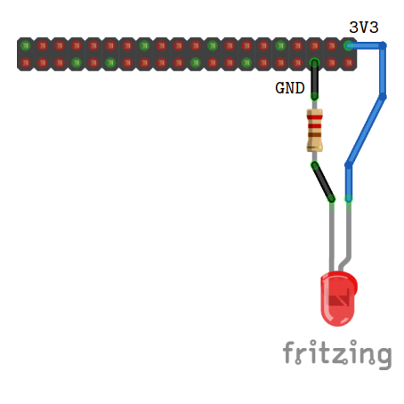
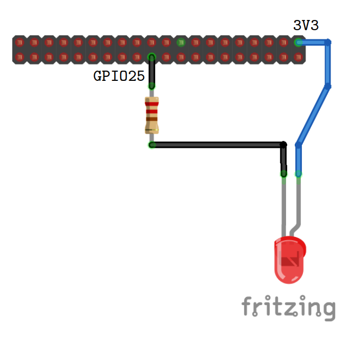
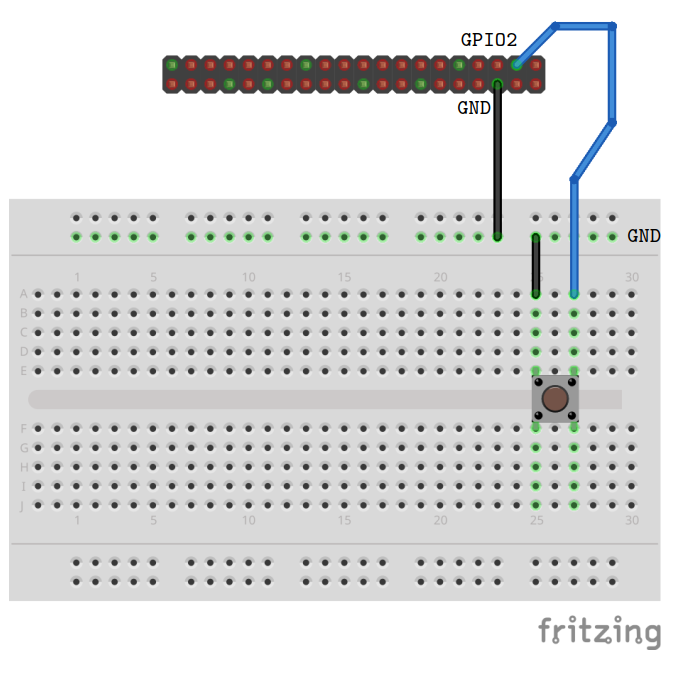
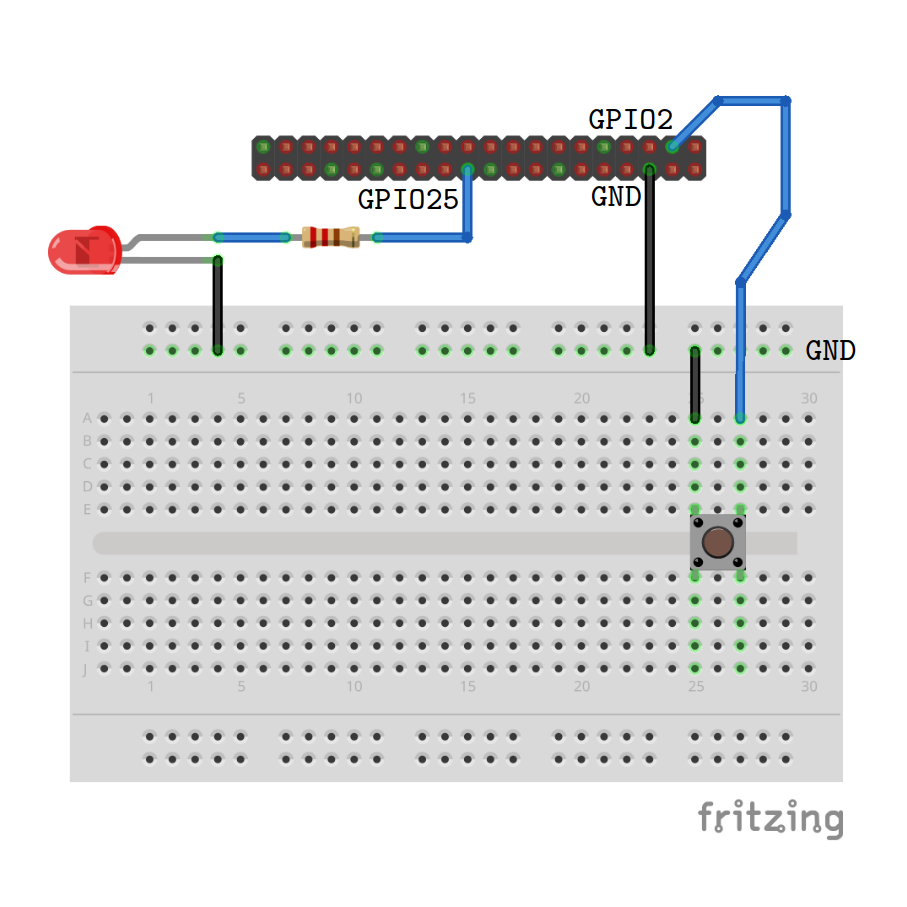

Sussex Digital Humanities Lab:
Digital Methods Accelerator Program
Buttons and Motors and Lights, Oh My!
🔘🤖💡
Making Objects Interactive with Code
N. Seymour-Smith, Sharon Webb ...
🌟
Note that this workshop builds on the previous DMA workshop "Coding for beginners"
We'll be doing a quick refresher on the relevant material, but if you want to look back at the slides for that workshop you can find them here
What will we learn?
- Tools: What is a Raspberry Pi and what makes it different? 🥧
- Tools: The Thonny "IDE" 👩💻
- How to execute basic programs in Python 🐍
- How to detect button presses 🔘
- How to flash an "LED" light 💡
- How to flash an "LED" light with a button press 💥
BUT
😐
🤝
🪑
Some useful terms:
Python 🐍- A helpful language for beginners
- Widely used in digital humanities and numerical analysis
- Not the only choice!
Some useful terms:
Syntax 📝✅❌Every programming language has its own special syntax (rules about how it must be written). Programming languages are fussy. A small mistake in the syntax, like a missing comma or indent may mean the code won't work
Some useful terms:
Integrated Development Environment (IDE)- Programming languages 'interpret' plain text commands
- IDEs are essentially text editors (like notepad)
- They also package useful functionality that helps you edit and understand code, as well as code execution, building or visualisation tools
What is a Raspberry Pi? 🥧
Ebon Upton (inventor):
- Core of original idea is a device that lets you have fun connecting to and learning hardware
- It's like the inside of a smartphone, stripped back with direct access to the stuff that makes it all work
- Key requirement: $25!
- Not only cheap to acquire, but cheap to break!
⇒ A great educational tool
So why not just us a Raspberry Pi for everything?
- Not fast
- Only four cores
- No GPU
- More work to set up
- Linux is unfamiliar
- Peripherals not always necessary
Introducing Thonny
Introducing Thonny

Hello World!

Writing a script

After clicking the run button you'll be prompted to save the script as a text file

Make sure to save the script with a memorable name!
We've learned:
- How to print "hello world" in python
- How to use an IDE to run code
- How to save it for reuse later
Congratulations 🎉
Electronic circuits
Electronic circuits
Components
| LED | Push button | Resistor |
*LED: "light emitting diode"
Introducing the GPIO header
What does it all mean!?
| 3V3/5V: | An 'always on' source of 3.3 or 5 Volt power, like the positive end of a battery |
| Ground (GND): | A ground connection used to complete a circuit, like the negative end of a battery |
| GPIO XX | General-purpose input/output pins, available to control via code! |
Our first circuit: Testing the LED
Hooking up to the GPIO
LED control
In the shell/interpreter area:
>>> from gpiozero import LED
>>> led = LED(25)
>>> led.on()
>>> led.off()
As a reusable script:
from gpiozero import LED
from time import sleep
led = LED(25)
while True:
led.on()
sleep(1)
led.off()
sleep(1)
Solderless Breadboards

Reading a button press
The code:
from gpiozero import Button
button = Button(2)
button.wait_for_press()
print("You pushed me!")
Combining the button and LED
Controlling the LED with the button
Add these lines:
from gpiozero import LED
from time import sleep
from gpiozero import Button
button = Button(2)
led = LED(25)
button.wait_for_press()
led.on()
sleep(3)
led.off()
We've learned:
- How to build basic electronic circuits and test them
- How to use a breadboard to prototype circuitry
- How to write code that controls lights and reads buttons
Congratulations 🎉
Useful resources
Turtle art 🐢🎨
We recommend having a look at the the following drawing projects as a leg up into the world of digital art: